Consideremos una variable con dos producciones:
| 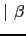 |
donde 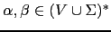 no comienzan por . Estas dos producciones pueden ser sustituidas por:
| 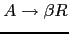 | |
| 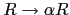 | 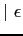 |
eliminando así la recursión por la izquierda.
Las producciones recursivas por la derecha dan lugar a árboles que se hunden hacia la derecha. Es mas difícil traducir desde esta clase de árboles operadores como el menos, que son asociativos a izquierdas.
| 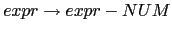 |
| 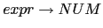 |
| 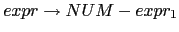 | { $expr{T} = $NUM{VAL}." ".$expr[1]{T}." - "} |
{ $expr{T} = $NUM{VAL} }
|
| 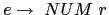 | { $e{TRA} = $NUM{VAL}." ".$r{TRA} } |
| 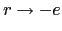 | { $r{TRA} = $e{TRA}." - " } |
| 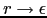 | { $r{TRA} = "" }
|
¿Cuál es el lenguaje generado por la gramática? ¿Puede el lenguaje ser analizado por un APDR? ¿Cual es la traducción de 4-5-6? ¿Es un esquema de traducción adecuado para traducir de infijo a postfijo? ¿Cuál es la traducción si cambiamos el anterior esquema por este otro?:
{ $e{TRA} = $NUM{VAL}." ".$r{TRA} } |
|
{ $r{TRA} = " - ".$e{TRA} } |
|
{ $r{TRA} = "" }
|